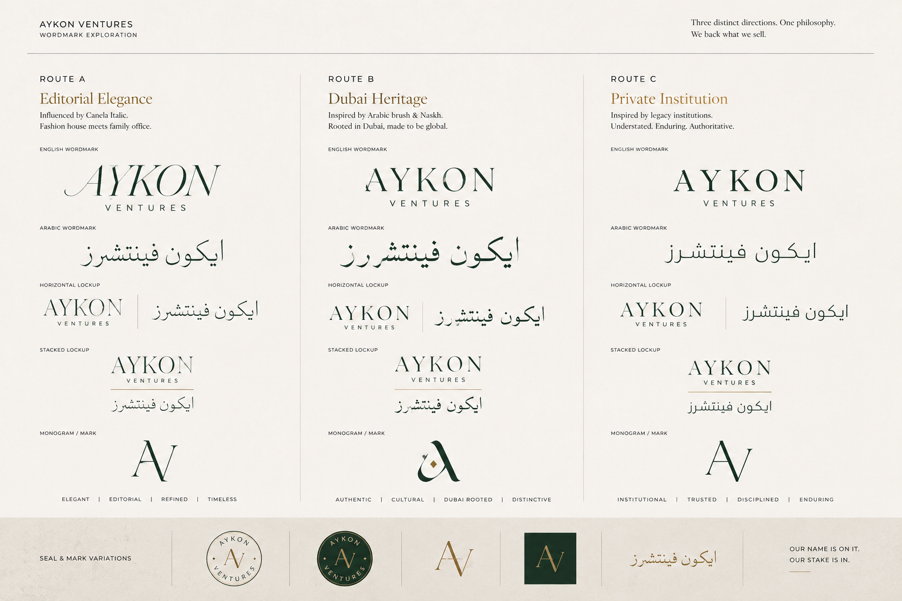
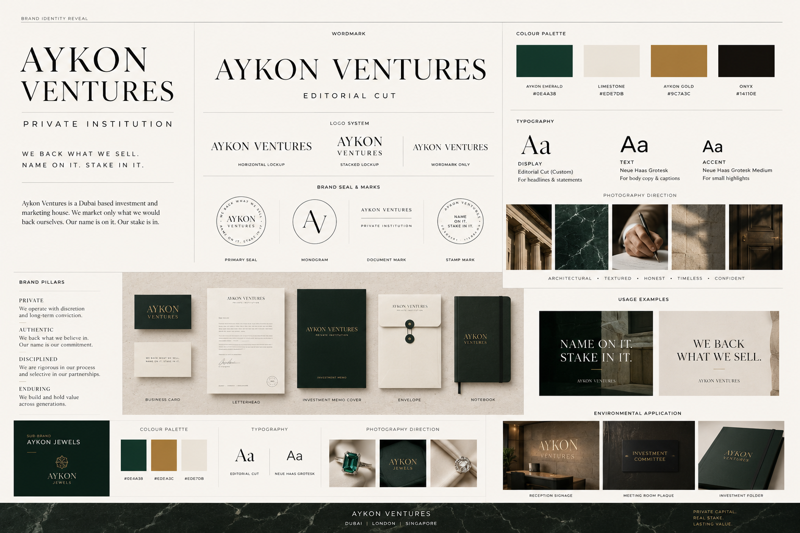

Brand book · master edition · for the founder
AYKONVENTURES
ايكون فينتشرز
One book. One system. One house.
L.L.C-FZ · Meydan Free Zone · Dubai
Edition 02 · 29 May 2026
Reality · positioning · personas
Voice · architecture · colour
Type · visual language · wordmark
Applications · punch list
Contents
What's inside.
The complete brand system, organised as a contract: strategy first, identity next, applications last, punch list at the end.
01
Read this first
How to use this book
02
The reality
Who Aykon actually is — grounded in the trade licence
03
The landscape
Competitors · cultural context · five white-space gaps
04
The foundation
Purpose · vision · mission · values
05
Positioning & archetype
Sage + Sovereign · "won't push what we wouldn't buy"
06
Promise · SMP · tagline ladder
Skin-in-game as the contract. Four taglines, kept live
07
Audience & personas
Faisal · Aanya · Layla · the Family Office
08
Voice & verbal identity
Five principles · tone spectrum · sample copy · banned words
09
Brand architecture
Aykon Ventures + Aykon Jewels + Aykon Spaces
10
Colour system
Limestone · Onyx · Emerald · Gold — 70-22-5-3
11
Typography
Cinzel · Cormorant · Inter · Amiri · JetBrains Mono
12
Visual language
Photography · iconography · layout · motion
13
Wordmark direction & designer brief
External commission · references · paste-ready brief
14
Brand applications
Card · social · deal one-pager · hoarding
15
Governance
What never ships · the open decisions
16
Punch list — what's next
Founder calls + parallel work tracks
17
Asset index · appendix
Colour HEX · type files · file paths · governance · for the developer
01 · Read this first
A book is a contract.
This document is the brand's source of truth. When a brief and the book disagree, the book wins. When you need the reasoning, the section reasoning holds the trail.
Aykon Ventures' brand exists to answer one question for every future hire, partner, photographer, copywriter, designer, and investor: "is this on-brand?" The book is the answer. It is short by design — every line was chosen against an alternative that was considered and rejected.
Three structural notes for the reader.
- Strategy before identity. Sections 01–07 are the contract: who Aykon is, what it stands for, who it talks to. Sections 08–13 are the identity that delivers the contract. The visual cannot exist without the strategy — never reverse the order.
- Open decisions are flagged with OPEN. Two remain at this edition — wordmark final cut (going to external type designer) and tagline (four kept live for A/B testing). The architecture vertical name (Aykon Spaces) and the locked direction (Route C · Private Institution) are decided. Sub-brand identities for Aykon Jewels and Aykon Spaces ship in their own mini-identity documents.
- Reality over aspiration. Every claim is grounded in the trade licence — Aykon is a marketing & holding house with a small own-account investment activity, not a developer or a brokerage. The brand is built around that, not over it.
Two governance rules that override everything else: (1) never overclaim — we are not a fund, not a developer; (2) the brand must not visually or verbally resemble DAMAC's Aykon City in any form.
02 · The reality
Who Aykon actually is.
Grounded in the trade licence — Meydan Free Zone LLC, three licensed activities, founded by Prachi.
Legal entity
Aykon ventures L.L.C-FZ
Meydan Free Zone limited liability company. Formation 2645134. Issued 8 Feb 2026, expires 7 Feb 2027. Registered address: Meydan Grandstand, 6th floor, Meydan Road, Nad Al Sheba, Dubai.
Managed by
Prachi Vishesh Manghnani
Sole manager on the licence. The founder fronts the brand — quietly, with a point of view, with capital and time on the line.
Activity 1 · 6202.99
Marketing Services Via Social Media
The core engine. Content, paid social, founder-led narrative, partner campaigns.
Activity 2 · 6499.02
Own-account investment (VC / club style)
Small stakes Aykon puts in itself — the proof of belief. Not a fund. No third-party AUM. No regulated syndication.
Activity 3 · 7320.96
Marketing Management
Strategy, brand, growth advisory. The senior-table layer above the social engine.
Execution partner layer
RERA-certified vehicles
Every real-estate transaction is executed through a licensed RERA partner. Aykon markets and aligns; the partner transacts.
In one line: Aykon is the Dubai marketing house that puts its name (and a little of its money) on what it pushes — and lets a RERA partner do the regulated deal.
03 · The landscape
Who already owns what.
The Dubai brand field, mapped. Five white-space gaps that combine to define Aykon's lane.
Developers · the civic incumbents
Emaar owns master-planned permanence — Marina, Downtown, Hills. Listed on DFM, civic-scale, institutional. DAMAC owns branded luxury — Versace, Cavalli, de GRISOGONO towers, and the "Aykon City" landmark in Business Bay (which forces our naming discipline). Binghatti is the disruptor, merging real-estate with automotive, jewellery and lifestyle via licensing partnerships. Sobha owns craftsmanship and backward-integration. Implication: developers own scale and inventory. Aykon competes with none of them; it markets in the same city under a different category.
Brokerages · the transactional tier
Betterhomes, Allsopp & Allsopp, haus & haus, fäm Properties. Agent-led, listings-coded, sell-side. Implication: Aykon must avoid every brokerage tell — agent grids, "JUST SOLD," portal aesthetics. Those codes say "we move stock," which contradicts "we back what we sell."
Holding / family-office tier
Dubai Holding and the invisible private-capital layer. Diversified, patient, almost entirely unbranded to the public. Implication: Aykon borrows posture (taste, patience, conviction) but inverts the invisibility — it is a small, fronted, followable marketing house.
The five gaps Aykon fills
- The fronted marketing house. Brokers are agent-led, developers are corporate, family offices are invisible. A founder-fronted, taste-led marketing house with skin in the game has no occupant.
- "Skin in the game" as the brand promise. Brokers earn whether you win or lose; syndicators earn on fees. Nobody leads with "our name and a small stake are on what we push."
- Taste as the through-line. Marketing + RE + jewellery + architecture only cohere as one house under a single curatorial point of view.
- Editorial restraint in a loud category. Every developer is render-loud; every broker is listings-loud. The Aesop/Sotheby's quiet register has no occupant in Dubai RE marketing.
- Bilingual native premium. Most Dubai brands treat Arabic as decoration. A house claiming a stake in this city must read as an owner, not a guest — Anghami's bilingual rigour is the local reference.
Combined, the five gaps describe one brand: a fronted Dubai marketing house with skin in the game, taste across hard assets, editorial restraint, and bilingual rigour. That is the brief for Sections 04–07.
04 · The foundation
Purpose. Vision. Mission. Values.
The four statements every Aykon decision is tested against. Read this aloud at any hire, any partner meeting, any creative brief. If a choice fails any of the four, it goes back.
Purpose · why Aykon exists
To turn conviction about Dubai into things you can stand inside, beside, or stake on — starting with our own.
The product is marketing. The investment-club wrapper is a sliver of capital. The purpose is something larger: to make belief in this city tangible — in a building bought, a stone set, a campaign run, a name on it. Conviction without a stake is a tweet. Conviction with a stake is a brand.
Why not the obvious alternatives
- "To help people invest in Dubai." Rejected. Every brokerage and syndicator says it. Frames Aykon as a service, not a principal-aligned operator.
- "To build Dubai's future." Rejected. Reserved for developers like Emaar at civic scale. Overclaims for a marketing house.
- "Conviction made tangible." Won. Owns the bridge between belief and asset. Scales across every vertical — a building, a piece of jewellery, a designed space are all "conviction made tangible."
Vision · the 10-year horizon
"Aykon backed it" is the credential a Dubai investor recognises. And one day, our own name is on the city.
The win condition is a status shift. In year one, Aykon is a small marketing house with skin in the game. In year ten, "Aykon backed it" is a phrase — a credential a partner sees on a deal memo and lowers their shoulders. The longest arc is that Aykon eventually signs its own buildings. Both ends of that arc are in the brand from day one.
Mission · what we do every day
We market what we'd back. We back what we market. RERA partners do the regulated deal.
Three deliberate parts of one sentence:
- "Market what we'd back." Editorial discipline before campaign discipline. Nothing leaves the studio that we wouldn't put our own small stake against.
- "Back what we market." The skin-in-game promise as operational truth. A small co-invest where it's structurally possible; our name on the line everywhere it's possible.
- "RERA partners do the regulated deal." Honesty about the licensing reality. Aykon doesn't transact; the named partner does. That gap is stated, never hidden.
Values · the five non-negotiables
Most value lists name virtues every company claims. Real values come at a cost. Each below is something Aykon will be asked to compromise, and refuse.
01 · Skin in first
We don't market what we wouldn't own a piece of. The cost: we move slower than fee-driven marketing shops that risk none of their own money. We accept this, because alignment is the entire brand.
02 · Hard assets over hype
We back things that exist — land, stone, metal, design. The cost: we pass on the hot, liquid, narrative-driven plays that generate buzz. We accept this, because permanence compounds and hype doesn't.
03 · Taste is underwritten
One quality filter across property, jewellery and architecture. The cost: we reject profitable but ugly deals. We accept this, because taste is the only thing that unifies three verticals into one house.
04 · Bilingual, native
Arabic and English from sketch one. The cost: design and copy take longer and cost more; translation is banned. We accept this, because a house claiming a stake in an Arab city must speak as an owner, not a guest.
05 · Proof over promise
We show the asset, the partner, the stake. The cost: we forfeit the easy marketing language ("trusted," "leading," "premium") the whole category leans on. We accept this, because in a city full of pitches, proof is the only credential left.
These four statements precede every other decision in the book. Positioning, archetype, voice, identity — all of it tests against the foundation. When a brief and the book disagree, the book wins; when the book and the foundation disagree, the foundation wins.
05 · Positioning & archetype
The corrected position.
Aykon is the aligned voice in a category full of unaligned ones. Sage curates; Sovereign holds standards.
Formal positioning
For Dubai investors and buyers who are tired of being sold to by brokers and developers with no skin in the game, Aykon Ventures is the marketing & holding house that markets only what it would back itself — and partners with RERA-certified vehicles to execute — because in a city full of pitches, alignment is the only credential that scales.
Plain English
Aykon is the Dubai marketing house that won't push what it wouldn't buy.
Archetype · Sage primary + Sovereign modifier
The Sage archetype owns taste, judgement and curation — "we know good when we see it, and we only put our name on the good." It fits a marketing-and-curation house far better than the Sovereign-primary frame of Vol 01, which overstated capital scale. The Sovereign modifier holds the standards and the posture — calm, confident, set apart. Together: "we judge, then we vouch."
Rejected with reasoning
- Magician (Vol 00). Parkar's archetype — make it disappear. Aykon is the opposite: make alignment visible. Borrowing it would be a category error.
- Sovereign-primary (Vol 01). Overstates capital scale for a marketing house with a small own-account stake. Demoted to modifier.
- Caregiver. Too soft for a marketing house; cedes the principal authority that is the point.
- Hero. "We'll overcome the market for you." Too earnest; reads as a fund chasing alpha.
06 · Promise · SMP · tagline ladder
Skin in the game, said four ways.
The SMP is the platform idea. The promise is the contract. The tagline ladder is the live mark — kept live for A/B testing per founder direction.
Single-minded proposition
We back what we sell.
Four words that resolve the whole brand: "back" = a small stake and reputation on the line; "sell" = the marketing work. Bilingually translatable, scales across every vertical (we back the building, the gemstone, the design), and the one claim brokers and developers structurally cannot copy.
Brand promise · the contractual line
Name on it. Stake in it.
The two proofs of alignment. Name = reputation; Stake = a small co-invest where it's possible. Used in deal memos and partner sheets — the line that explains why marketing means more from Aykon than from anyone else.
Tagline ladder · all four live for A/B testing
Per founder direction, no single tagline is locked at the platform layer. Each below owns a different surface (short → relational → declarative → quiet). Real-world performance picks the winner.
- "Skin in." Two-word brand close. Sharpest. Best for ad ends, OOH, social sign-offs.
- "Same side of the table." The relational frame. Best for partner conversations and editorial — explicitly anti-broker.
- "We back what we sell." The SMP doubling as tagline. Most declarative; works as website hero.
- "Name on it." Quiet confidence. Reputation as the alignment. Scales under any visual.
Killed, with reasoning (paper trail)
- "Out to buy Dubai." Overclaims capital. Killed.
- "Our money is in first." Untrue at this scale. Replaced.
- "Invest beside us." Implies a syndication offer Aykon isn't licensed to make. Killed.
- "A stake in the city." Beautiful but vague; loses the skin-in-game specificity.
07 · Audience & personas
The four humans Aykon designs for.
Not segments — humans. Each tested by reading copy aloud as them. If it sounds like a pitch, it's wrong.
Primary · Faisal
The conviction investor
44. GCC-based, sold or scaled a business, now allocates. Owns Dubai property already, bored of brokers. Wants someone with a thesis and skin in the game. "I don't need another listing. I need someone who's in it with me."
Secondary · Aanya
The diaspora believer
38. London/Mumbai, high earner, watching Dubai from afar. Believes in the city, has no time or local edge. Invests beside someone she trusts before flying in to view units. "I want exposure to Dubai without becoming a part-time landlord."
Secondary · Layla
The taste buyer
41. Buys the Jewels pieces and commissions the architecture vertical. Status through design, not weight. Her purchase is how she meets the house — and how she later joins the co-invest table. "I can tell when something was made by someone with a point of view."
Tertiary · The Family Office
The aligned co-investor
Writes the larger cheque. Diligence-driven, allergic to hype, rewards alignment above all. Comes in only once "our name and stake are demonstrably on it." The validation tier, not the volume tier.
Anti-personas · who Aykon is not for
The flipper chasing a six-month margin · the bargain-hunter who leads with "best price" · the guaranteed-ROI punter · the passive yield-only buyer who wants no relationship and no brand. Each is profitable in the short run and corrosive to the house. Optimising for any of them turns Aykon into a broker.
Primary persona · deep profile · Faisal
If the brand lands with Faisal, it lands. He is the centre of the strategy.
What he believes
Dubai is a generational bet and he's under-allocated. But he won't buy retail off a render again, and he won't hand money to a broker whose incentive is the transaction, not the outcome.
His friction list
Brokers who vanish post-sale · "off-plan" that's really speculation · no one with their own capital at risk · the inability to tell taste from marketing · being treated as a lead.
Journey — six stages
| Stage | What he does | What the brand must do |
|---|
| 01 · Notice | Sees an Aykon thesis post — a district call, a deal Aykon is backing. | Lead with conviction, not inventory. No CTA. |
| 02 · Weigh | Checks whether Aykon actually has its name on what it talks about. | Show the position. "Name on it. Stake in it." — provable. |
| 03 · Approach | Reaches out quietly, on his terms. Hates forms. | A private door, not a lead funnel. Human, named. |
| 04 · Diligence | Wants the thesis, the terms, the alignment, the RERA partner in writing. | Editorial clarity. Proof over adjectives. Disclose the partner. |
| 05 · Transact via RERA partner | Closes through the licensed vehicle Aykon partners with. | Hand off cleanly. Stay on the same side of the table through close. |
| 06 · Refer | Brings his network in — the referral economy. | Make him look discerning for being early. |
08 · Voice & verbal identity
Voice is the cheapest way to be expensive.
Five principles. One tone position on five axes. Off-brand vs on-brand sample copy. The banned list.
The five voice principles
01
Certain, never salesy
Declarative, no urgency, no exclamation. The premium signal is restraint.
02
Specific, never spreadsheet-y
The address, the material, the year. Never quote a guaranteed yield.
03
Plain about alignment
We say where our name is, where our small stake is, who the RERA partner is. Transparency is the moat.
04
Bilingual, never translated
Arabic and English written in parallel by writers fluent in both.
05 · Editorial, never listings-coded. Reads like a private bank's letter, not a property portal. No skyline hashtags. No "DM for price."
Tone-of-voice spectrum
| Axis | Left | Aykon sits | Right | Why |
|---|
| Formality | Casual | Composed | Formal | Adult, regional, never stiff. |
| Energy | Eager | Unhurried | Detached | Eager is the broker tell. |
| Warmth | Effusive | Warm to partners | Cold | Sage authority, warmed at the human moments. |
| Certainty | Hedging | Declarative | Dogmatic | Conviction is the product. |
| Disclosure | Vague | Plain about alignment | Oversharing | Specific on stake and partner; never on guarantees. |
Sample copy · off-brand vs on-brand
| Context | Off-brand | On-brand |
|---|
| Instagram thesis | 🔥 HOT DEAL in Business Bay! DM for price 📲 | We're backing a floor in Business Bay this month. Here's the thesis — and the RERA partner. |
| Deal announcement | Aykon is proud to announce an exciting new acquisition! | Our name is on a floor in DIFC. Our stake is in. The RERA partner is named below. |
| Partner one-pager | Guaranteed 15% ROI! Don't miss this opportunity. | We market this through Aykon. The transaction is executed through [RERA partner]. Our small stake is in. |
| Jewels | Stunning 22k gold set — best price in Dubai! | Designed in-house. Set by hand. Worth more for the eye than the gram. |
| Architecture | We create stunning luxury dream spaces! | We design what we'd put our own name on. Some of it, we will. |
| When something slips | We sincerely apologise for any inconvenience! | The deal didn't clear diligence. We walked. Your name was never on it. |
Banned words & patterns
Banned words
luxury · premium · elite · exclusive · trusted · leading · partner (as filler) · guaranteed · ROI-as-hook · don't-miss · dream home · fund · syndicate · AUM · portfolio company
Banned patterns
Exclamation marks · emoji in brand copy · Title Case Headlines · skyline hashtags · "DM for price" · three-adjective stacks · rhetorical questions ("Tired of renting?") · urgency manufacturing.
Sub-brand voice modulation
- Aykon Ventures (parent). The voice above — Sage + Sovereign, plain about alignment.
- Aykon Jewels. Quieter, more sensory. The hand, the stone, the design. Never souk-coded, never per-gram.
- Architecture vertical (name open). Monograph register — spatial, slow, considered. Lets the work speak.
09 · Brand architecture
One house. Three names. One open.
The parent runs the marketing and holds the small stakes. Two sub-brands carry the taste verticals. Estates is collapsed into the parent. Developments is paused until there's a building.
Parent · the house
Aykon Ventures
The marketing & holding company. Runs all real-estate marketing under its own name. Holds the small own-account investment stakes. Brand voice and cap-table sit here.
LOCKED
Vertical 01 · jewellery
Aykon Jewels
Fine jewellery — design and provenance, not gold by weight. Emerald is the natural accent (emerald + gold is the jewellery pairing).
LOCKED
Vertical 02 · architecture
Aykon Spaces
Architecture, interiors, and the future development arm when ground breaks. The founder's pick, locked.
LOCKED
Architecture name · why Spaces, the alternatives on file
- Aykon Spaces · LOCKED. The founder's pick. Broad, approachable, immediately understandable to a non-design audience. Scales from interiors to architecture to the future development arm under a single noun. Final.
- Aykon Bureau · alternate on file. The strategist's recommendation. "Bureau" is what real architecture & design practices use about themselves (Brussels/Antwerp/Paris heritage). Documented for the record in case a future repositioning toward design-house specificity becomes desirable.
- Aykon Studio · alternate on file. Architect-house word. More common, slightly populist. Documented as the second alternate.
- Aykon Spaces. Founder's original pick. Broadest, most approachable, but the most generic — "Spaces" is WeWork-adjacent and leans real-estate-marketing more than design practice.
Cut from earlier editions
- Aykon Estates. Collapsed into the parent. Aykon Ventures is the real-estate marketing arm.
- Aykon Developments. Paused. Premature without a building. Reactivated as a sub-brand only when ground is broken.
- Maison / Atelier / Form / Build. Rejected with reasoning earlier; founder's English-word direction holds.
10 · Colour system
Emerald + gold on Dubai stone.
A jewellery house's palette. Distinct from DAMAC's gold-only Aykon City. Matte, never glossy. Disciplined ratio.
The Dubai stone. The world. 70% of every surface.
Ink, authority, dark-mode canvas. 22%.
The secondary signature. Replaces maroon. Jewellery-coded; gold's natural partner. 5%.
Matte, architectural. Reserved for the wordmark/seal. 3%.
The ratio · 70 – 22 – 5 – 3
70% LIMESTONE
22% ONYX
5% EMERALD
3% GOLD
Gold appears almost only on the wordmark and the seal. Emerald is the everyday accent — rules, eyebrows, callouts, Jewels packaging, hero moments. Together they read as jewellery-house, not as developer-with-gold-foil.
Discipline rules
- Matte gold, always. Never glossy foil, never bevel, never gradient. The Vol 00 mistake.
- Emerald never as wallpaper. Used as accent — rules, type, small fills. Onyx and limestone hold the ground.
- Dark mode. Onyx becomes canvas; limestone becomes type; emerald shifts to Emerald Lt (#1F6A52) to hold contrast.
- Dropped: maroon/oxblood entirely; bronze folded into gold.
11 · Typography
Cinzel names. Cormorant writes. Inter reads.
A Roman capital for the name, a high-contrast serif for the writing, a quiet grotesque for the reading, mono for the money, classical Naskh for Arabic.
Display · Cinzel
AYKON
Roman inscriptional caps — the lettering of monuments, banks and maisons. Display caps, vertical names, section titles. Not the logo wordmark — that goes to external commission (Section 12).
Editorial · Cormorant
Aykon
High-contrast serif for headlines, deks, statements — sentence case. The voice of every document. Jewellery-house elegance.
Body · Inter
Aykon
Quiet grotesque for body, UI, captions. It steps back so the serifs lead.
Arabic · Amiri
ايكون فينتشرز
Classical Naskh. Heritage register. The full company name in Arabic — designed alongside the Latin, never translated. Note: ايكون (no hamza/alif), per the trade licence.
The scale · eight tiers
Wordmark · Cinzel caps
Aykon Ventures
Display · 60 / Cormorant
We back what we sell
H1 · 40 / Cormorant
Name on it. Stake in it.
H2 · 28 / Cormorant
A house, with skin in the game
H3 · 14 / Inter
Section header — workhorse subhead
Body · 14 / Inter
The fourteen-pixel workhorse for most copy.
Eyebrow · mono
AYKON JEWELS · NEW SERIES
Data · mono
AED 4,200,000 · CO-INVEST 40%
12 · Visual language
Land, stone, hands, detail.
Never renders, never skylines, never agents grinning beside cars. Aykon photographs what it backs — and the craft inside it.
Photography
- Editorial & architectural. Tight crops, shallow DOF, natural light. The register of an architecture monograph, not a listing portal.
- Material, hands, land, detail. Stone, brass, raw concrete, gold in the rough. A jeweller setting a stone. A site at dawn. A façade detail. The asset, not the brochure.
- No stock, no smiles, no skyline. No isometric illustration. No drone-over-Marina. No agent-in-suit.
- Warm and grounded grade. Toward stone and bronze, never cool corporate blue.
Iconography & the seal
Monoline, 1.5pt strokes, square caps, drawn on a 24px grid. Single weight. Resting state onyx, active state emerald. The AV seal recurs as the corner mark on documents — the stamp of a house. Icons are sparse — Aykon is a house, not an app.
Layout & grid
- 12-column desktop, 4-column mobile. Generous 64px margins. Whitespace is the wealth signal.
- Asymmetry, deliberately. Content sits 60/40, not centred — editorial, like a monograph spread.
- One idea per surface. A thesis, a deal, a piece. We never crowd.
Motion
Slow, certain, weighted. 400ms ease-out for entries; nothing bounces, nothing springs. The serif arrives and stays. The seal is the one flourish — drawn on once at load, like a stamp pressing down. Used rarely. No skyline timelapses, no coin-flip gold shimmer, no counter-ticking AED-raised animations.
13 · Wordmark direction · LOCKED
Private Institution.
After exploration across three routes, the founder has locked Route C — Private Institution. Upright Roman caps editorial serif. Disciplined. Enduring. Routes A and B remain on file as documented alternates.
The locked direction · Route C — Private Institution
The wordmark is set in an upright high-contrast Roman caps editorial serif. Not italic, not calligraphic, not playful. The register is institutional — the type a private bank, a heritage law firm, or a sovereign asset manager would set their name in. Paired with the Arabic ايكون فينتشرز in classical Naskh, matched in weight and rhythm.
Descriptors
Institutional. Trusted. Disciplined. Enduring.
Why this is the right call
- The institutional wordmark counterweights the boutique reality. Aykon is a small marketing & holding house, fronted by a founder. The wordmark signals discipline and durability; the founder brings the warmth and conviction. The tension is the brand.
- Structurally clean of DAMAC. DAMAC MAISON's master mark is italic sans-serif, forward-leaning. Route C is upright Roman serif. Different stroke logic, different weight feel, different posture — no visual collision.
- Translates across every vertical. The institutional serif scales from Aykon Ventures (parent) to Aykon Jewels (refined) to the architecture vertical (monograph) without bending.
- Defensible at trademark stage. Upright Roman caps editorial serif is a distinct visual class — easier to clear in registry searches than calligraphic italics or sans display.
The exploration board shown to the founder lives in the brand archive. The locked Route C wordmark goes to a type designer for the final cut — refined custom Roman caps, one act of bespoke craft, bilingual Latin + Arabic. 2–3 week commission. Routes A and B are kept on file as documented alternates so the decision is defensible later.
13 · The decision board · three routes on the table
Three routes. One picked.
For the record and for the founder review. Three distinct routes were explored against the brand brief. After honest discussion, Route C — Private Institution was locked. Routes A and B remain on file as documented alternates.
The three routes side by side

Route A · alternate
Editorial Elegance
Canela / Mercury italic. Fashion house meets family office. Strongest if the brand later pivots toward Maison / Jewels.
Route B · alternate
Dubai Heritage
Caps with cultural rooting; AV monogram with Arabic-influenced curve. The AV-Arabic monogram is the most distinctive single element across the exploration.
Route C · LOCKED
Private Institution
Upright Roman caps editorial serif. Institutional. Trusted. Disciplined. Enduring. The locked direction.
13 · Private Institution · full asset reveal
The locked direction, visualised.
The full Route C — Private Institution identity built around wordmark variant 11 (Editorial Cut). Wordmark, monogram, seal, business cards, colour palette, typography, application. Ready to hand to a production designer for refinement.

Generated via AI exploration; the wordmark itself goes to a type designer for the final custom cut. The system, palette, typography hierarchy, monogram approach, and applications shown above are the locked production reference.
13 · Wordmark · alternates & designer brief
Two alternates, on file.
Routes A and B were both strong contenders. They stay in the brand record as documented alternates — so the call is defensible later, and so a successor founder doesn't re-litigate it.
Alternate · Route A
Editorial Elegance
High-contrast italic serif — Canela / Mercury Display Italic family. "Fashion house meets family office." Held in case the brand later pivots toward Maison / Jewels emphasis, and as the reserve register if the institutional posture feels too cold in market testing.
Alternate · Route B
Dubai Heritage
Caps with cultural rooting; AV monogram with Arabic-influenced curve. "Authentic. Cultural. Dubai rooted." Held in case the brand needs to emphasise regional belonging. The AV-with-Arabic-curve monogram is the single most distinctive element across the whole exploration — may be repurposed as a secondary seal even with Route C primary.
The brief for the type designer's final cut
Brief to hand the type designer
Design the final cut of the LOCKED Route C — Private Institution wordmark for AYKON VENTURES (Latin) and ايكون فينتشرز (Arabic).
The register. Upright Roman caps, editorial high-contrast serif. Discipline, heritage, durability. The wordmark of a private bank or a heritage maison — not a developer, not a brokerage.
Letterforms. Refined high-contrast Roman caps (thin-thick contrast) with classical inscriptional proportions. Subtle, restrained — not default Cinzel. One single act of bespoke craft: a custom counter on the A, a refined serif on the K, or a custom ligature where A meets V in the monogram. One, not three.
Bilingual discipline. Arabic ايكون فينتشرز co-equal, classical Naskh, drawn alongside the Latin from sketch one. Note: ايكون (no hamza/alif), per the trade licence.
Differentiation. DAMAC MAISON's mark is italic sans-serif, forward-leaning. Ours is upright Roman serif — structurally different posture.
Colour. Aykon Gold #9C7A3C on Limestone #EDE7DB (primary) and on Onyx #14110E (reversed). Matte only — never gloss-foil, never gradient bevel.
Deliver. Editable vector (SVG/AI), 2 weights (Regular + Bold), 3 colourways (Gold / Onyx / Reversed White). Lockups: primary stacked, horizontal, AV monogram, circular seal. Clear-space + minimum-size rules.
Must / Must not
Must
- Upright Roman caps, editorial high-contrast serif
- One single act of bespoke craft (one custom counter, one ligature — one, not three)
- Bilingual: Latin and Arabic ايكون فينتشرز designed in parallel
- Hold up at 18mm wide and at 8m wide (signage)
- Read as a private institution — bank, maison, heritage firm
- Work in matte gold on Limestone, Onyx, and reversed white
Must not (any one = disqualifying)
- Italic sans-serif (DAMAC MAISON's lane)
- Forward-leaning, dynamic, or casual postures
- Gold-foil gradient, 3D bevel, chrome effect
- Diamond, quartz, or crystal motif
- Skyline silhouette, falcon, crown, crest
- Default Cinzel or any stock Google Font — must be a refined custom cut
- Three flourishes — restraint is the brand
Deliverables checklist
- Vector: Editable SVG + AI source; Latin + Arabic; outlined and live-text versions.
- Weights: Regular + Bold (two minimum).
- Colourways: Gold #9C7A3C · Onyx #14110E · Reversed white on Onyx.
- Lockups: Stacked (Latin over Arabic) + horizontal (Latin · Arabic with hairline divider).
- Rules: Clear-space spec, minimum sizes (full lockup 18mm / 140px; favicon 24px), don't list.
- Format pack: SVG, PNG (transparent, 3 sizes), PDF (print), ICO (favicon).
13 · DAMAC differentiation, spelled out
What Aykon Ventures is not.
A hard rule. The brand defends this in court, in conversation, and on paper.
| Layer | DAMAC's Aykon City | Aykon Ventures |
|---|
| Category | Branded luxury residential tower (a place) | Marketing & holding house (an investor) |
| Master mark | "DAMAC MAISON" italic sans-serif, white + metallic gold, forward-leaning ~12°. "AYKON CITY" is a small letterspaced caps descriptor underneath — not the primary mark. | "Aykon Ventures" italic high-contrast serif (Canela / Mercury Display family), matte gold, with serifs. Different stroke logic, different posture. |
| Motif | Quartz / diamond / crystal | No diamond, no crystal — type-led mark |
| Palette | Glossy gold + dark | Matte gold + emerald + onyx + limestone |
| Imagery | Glassy renders, luxury-tower codes | Editorial photography, material detail |
| Voice | Luxury-developer marketing | Editorial, plain about alignment |
| Naming discipline | "Aykon City," "Aykon Hotel" | Always "Aykon Ventures" + descriptor — never bare "Aykon" |
Defence in one sentence: "DAMAC's Aykon is a place; Aykon Ventures is an investor. Same letters, opposite categories." The brand maintains this gap visually and verbally on every surface.
14 · Brand applications
Where the brand actually lives.
Templates for the surfaces that carry the most weight. Each shows the system applied — replace the placeholder wordmark with the commissioned mark when it lands.
Business card
DUBAI MARKETING & HOLDING HOUSE
Aykon Ventures
WE BACK WHAT WE SELL
A
Prachi Vishesh Manghnani
FOUNDER & MANAGER
PRACHI@AYKONVENTURES.AE · MEYDAN GRANDSTAND, DUBAI
Instagram thesis tile
AYKON · THESIS 04 · BUSINESS BAY
Three reasons we're backing Business Bay. And one reason we passed on Marina.
WE BACK WHAT WE SELL
AYKON · DEAL NOTE
Our name is on a floor in DIFC. Our stake is in.
RERA PARTNER NAMED INSIDE · DM PRACHI
Deal one-pager · the workhorse
Aykon Ventures
DIFC · MAY 2026
A full floor in DIFC. Our name and stake are on it.
We've put our name and a small co-invest stake on this floor. The transaction is executed by [RERA-licensed partner — named below]. Co-invest interest open to a small circle on the same terms.
Note the discipline: stake disclosed, RERA partner named, never a promised return. "Plain about alignment" — Section 07 — made tangible.
Hoarding · when Jewels or the architecture vertical ships
ايكون فينتشرز
AYKON JEWELS · LAUNCH SERIES · 2026
Worth more
than its weight.
Aykon Ventures
WE BACK WHAT WE SELL
15 · Governance
What never ships.
The operational filters. Anything that fails one of these goes back to the brief.
× Logo & mark
Never bare "Aykon" — always "Aykon Ventures" + descriptor. Never the Vol 00 diamond. Never gloss-gold or 3D bevel. Never set the wordmark in sans.
× Colour
Bronze is folded into Gold. Maroon is gone. Gold never exceeds ~3% of a surface. Emerald never as wallpaper. Onyx/Limestone hold the ground.
× Voice
Never "luxury / premium / trusted / guaranteed." Never fund/syndicate/AUM language. Never urgency. Never "DM for price." Always disclose the RERA partner.
× Imagery
No skylines, renders, agent smiles, drone timelapses. No falcon, crown, crest. No diamond/quartz motif. No stock photography.
× Overclaim
Aykon is not a fund, not a developer, not a brokerage. Saying so on any surface is the single biggest brand violation possible. Honesty about scale is the moat.
× DAMAC adjacency
The mark must not visually or verbally resemble DAMAC's Aykon City. If a layout feels close, it goes back.
The three open decisions on the record
For the founder to lock at her pace; nothing downstream is blocked except the wordmark.
- Wordmark final cut. Going to external type designer per the Section 12 brief. Strategist not involved in execution; brief is the deliverable.
- Tagline. All four kept live (Skin in. · Same side of the table. · We back what we sell. · Name on it.); real-world A/B testing picks the winner over the first 90 days of public-facing content.
16 · Punch list — what's next
From book to brand, in ten steps.
Two items gate everything; the other eight run in parallel. End-to-end: ~4 weeks to a fully refreshed brand and a live site.
- Architecture name locked · Aykon Spaces ✓
Founder picked Aykon Spaces. Bureau and Studio retired to the brand archive as documented alternates.
- Run the wordmark through the Designer Brief (Section 12)
Paste the brief into ChatGPT / Midjourney, or hand to a human type designer (Arabic-Latin specialist preferred — Tarek Atrissi, 29LT, or a freelancer via Behance). Iterate 2–3 rounds. Output: editable vector (Latin + Arabic), 2 weights, 3 colourways. ~2 weeks.
- Reflow this book to the commissioned wordmark
Once the wordmark lands, swap the Cinzel placeholder across every cover and application page in this book. Re-render the master PDF. 1 day.
- Cut the full logo file pack
Primary / horizontal / seal / Arabic-led versions, gold-on-light + gold-on-dark + one-colour onyx + reversed white, transparent PNG + SVG + favicon, plus Jewels and architecture-vertical sub-brand lockups.
- Voice library · 30 ready-to-use lines
10 IG thesis tiles · 10 deal-announcement templates · 5 partner-deck headlines · 5 Jewels / architecture lines. Each on-brand, plug-and-play, bilingual where it matters.
- Build aykonventures.ae
One-pager. Hero with the commissioned wordmark + the SMP. Three sections: what we do (marketing & holding), what we back (live deals), who we partner with (RERA vehicles). Plain about alignment.
- Aykon Jewels mini-identity + launch plan
Logotype (inherits parent), emerald-and-gold packaging system, 6-week IG launch sequence. Owns the jewellery vertical narrative.
- Architecture vertical mini-identity
Logotype, project-sheet template, two case-study skins. Pitched for portfolio use as work comes in.
- Partner-marketing one-pager template
The single PDF a RERA partner gets when they're co-running a campaign with Aykon. States alignment, scope, deliverables, IP, and the "we don't push what we wouldn't back" clause.
- DAMAC trademark/class scan + Meydan name review
One lawyer hour: confirm "Aykon Ventures" is clean in the relevant trade classes vs DAMAC's "Aykon" usage. Document the result so the brand is defended on paper.
Founder decision point still needed: wordmark commission go-ahead (Section 13). Architecture name (Aykon Spaces) is locked. Everything else is execution against this book.
17 · Asset index · appendix
One-stop reference for the developer.
Everything a website developer, designer, or partner needs to build against Aykon without flipping through the book. Colours, type files, file paths, the do/don't compressed.
Colour palette · HEX reference
| Name | HEX | RGB | Usage |
|---|
| Limestone | #EDE7DB | 237 · 231 · 219 | The world / ground · 70% |
| Onyx | #14110E | 20 · 17 · 14 | Ink, authority, dark-mode canvas · 22% |
| Aykon Emerald | #0E4A38 | 14 · 74 · 56 | Signature accent · 5% |
| Aykon Gold | #9C7A3C | 156 · 122 · 60 | Wordmark / seal only · 3% |
| Gold Lt | #C49A56 | 196 · 154 · 86 | For wordmark on dark surfaces |
| Emerald Lt | #1F6A52 | 31 · 106 · 82 | For emerald on dark / dark-mode |
| Paper | #FBF9F4 | 251 · 249 · 244 | Lighter ground for screens / documents |
Type system · faces & web links
| Role | Typeface | Web source | Notes |
|---|
| Display / wordmark | Cinzel | fonts.google.com/specimen/Cinzel | Caps only. Placeholder until custom Route C cut lands. |
| Editorial | Cormorant | fonts.google.com/specimen/Cormorant | Headlines, deks, pull-statements (sentence case). |
| Body / UI | Inter | fonts.google.com/specimen/Inter | All running copy, web body. |
| Arabic | Amiri | fonts.google.com/specimen/Amiri | Classical Naskh. Co-equal with Latin. |
| Data / mono | JetBrains Mono | fonts.google.com/specimen/JetBrains+Mono | Prices, terms, eyebrows, labels. |
File paths · what lives where
- Master brand book · aykon/Aykon_Ventures_Brand_Book_Master.pdf
- Decision board image · aykon/images/three_routes.png
- Private Institution reveal · aykon/images/private_institution_reveal.png
- Italic alternates (Route A) · aykon/images/route_a_refinement.png
- Logo kit (Vol 01 archive) · aykon/logo/
- Type files · aykon/fonts/
- HTML source for the brand book · aykon/master_brandbook.html
Governance · do / don't compressed
Do
- Always "Aykon Ventures" + descriptor, never bare "Aykon"
- Lead with skin-in-game proof (name + stake + RERA partner)
- Sentence case everywhere except mono eyebrows + display caps
- Cinzel names · Cormorant writes · Inter reads
- Disclose the RERA partner on every deal-facing surface
- Arabic ايكون فينتشرز co-equal with Latin from sketch one
Don't
- No "luxury / premium / trusted / leading / guaranteed"
- No fund / syndicate / AUM / portfolio language
- No gloss-gold gradients, no 3D bevels, no skylines, no falcons
- No urgency, no "DM for price," no emoji in brand copy
- Never resemble DAMAC MAISON's italic sans wordmark
- Never translate Arabic — always write it native
Open decisions on file
- Wordmark final cut. Going to external type designer. Brief lives in Section 13.
- Tagline. Four kept live for A/B over the first 90 days of public-facing content.